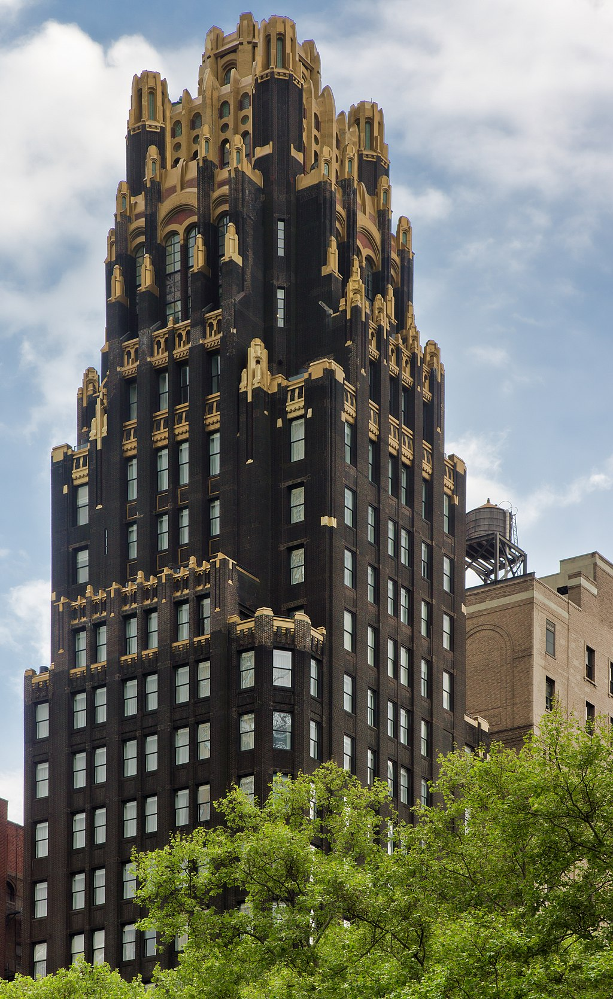

american radiator building
American Radiator Building (American Standard Building 이라고도 함)은
뉴욕시 의 맨해튼 미드타운 지역에 있는 Bryant Park 바로 남쪽의 40 West 40th Street에 있는 초기 초고층 건물 입니다.
Radiator Company 를 위해 Raymond Hood 와 André Fouilhoux 가 고딕 및 아르데코 스타일로 디자인했습니다
이 103m, 23층 타워인 American Radiator Building의 원래 부분은 1924년에 완공되었습니다.
원래 타워의 서쪽에 있는 5층 별관은 1936년부터 1937년까지 지어졌습니다.
